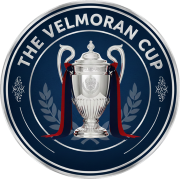
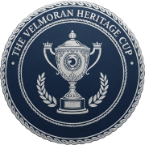
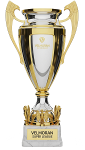
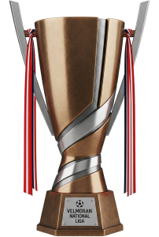
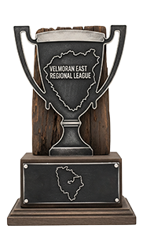
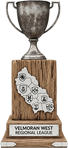
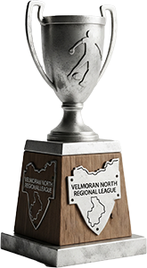
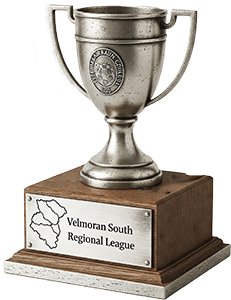

Est. 1896
Velmoran Football Association
The governing body of Velmoran football — the domestic pyramid, its competitions, and the national side, the Hawks, that both founding peoples send out together.
1896
Federation Founded
1904
Joined World Body
1954
Joined Continental Body
62,500
Stadion Valdren Capacity
The Badge
The hawk is the clans'. The red shield is the union banner that still hangs above the old wall-hangings in the Hall at Valdren, where the Charter was signed in 1891. The laurel wreath was added by a British engraver in 1896, and nobody has dared remove it.
The national flag is a different thing: a gold hawk on navy, adopted after the Charter. The gold is the forge-light of the Kovarai, and the navy is the sea both peoples crossed to get here.
The Federation
The Velmoran Football Association was constituted in 1896, five years after the republic's founding, by eleven delegates: six from the lakes and the western farms, five from the foundry towns. It applied for recognition by the world governing body the year it was itself established, and was admitted in 1904.
During the coast occupation, its membership of the world body was kept alive by letters carried out through neutral Stockholm. When the ports were freed in the spring of 1945 the association's secretary produced the whole file, dues paid to date.
In 1954 the association became a founding member of the continental body. Recognition took another half century.
Stadion Valdren

Sixty-two thousand five hundred seats is a large ground for a federation with Velmora's reputation, and the stadium rarely comes close to full outside a handful of fixtures a year. It was begun in 1899 on the old moot field beside the Hall and open by 1902, when the republic was barely a decade removed from the Great Collapse. It was built to the scale it was on purpose: a republic raising something too big for the team it had, on the theory that the country would grow into it eventually. It has been rebuilt twice since.
By tradition, no club plays a league match there. The stadium belongs to the Republic, not to anyone. The Velmoran Cup Final is the one day a club sets foot in it, and even Valdren Atletika, who have won more Cups than anyone, play their home games at the Titan Forge Arena.
Three Tiers, Four Regions
Seventy-five clubs play under the Association across three tiers. The Velmoran Super League sits at the top, the Velmoran National Liga below it, and beneath both, the country splits into four regional leagues — East, West, North, and South — each drawing its ten clubs from whichever towns are closest to reach on a Saturday, not from the five cultural regions of the country. A club from the Eastern Reaches and a club from the Southern Lakes can easily end up in the same regional league, and usually nobody but the fixture secretary notices.
The Cups

The Velmoran Cup
Open to the Super League and most of the National Liga — 17 VSL clubs plus 15 VNN clubs, 32 in total. Straight knockout from the Round of 16 onward, and it settles the one day a year a club plays at Stadion Valdren.

The Velmoran Heritage Cup
The regional leagues' own cup — all 40 clubs across East, West, North, and South. No club has lifted it yet.
League Trophies
The Super League and National Liga titles, and the four regional trophies awarded each spring.

Super League

National Liga

East League

West League

North League

South League
Youth Football
Below the senior pyramid, U19 sides play in five regional groups, alongside a standalone Youth Cup open across all five. It's the pathway every academy in the country feeds into before a player is old enough to matter to the senior game.